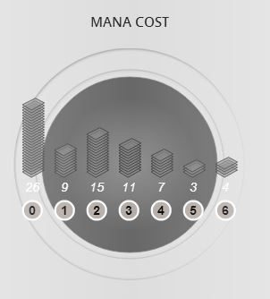

What is the Mana Curve?
The mana curve is one of the most fundamental concepts in Magic: The Gathering deck building. It refers to the distribution of converted mana costs (CMC) across the cards in your deck. A well-constructed mana curve ensures you can play spells efficiently throughout the game, maximizing your resources and maintaining pressure on your opponent.

Understanding Mana Costs and Deck Construction
Building an optimal mana curve requires understanding how different CMC slots function in your strategy:
- Early Game (CMC 1-2)
- One-drops: Aggressive creatures, mana dorks, and cheap removal
- Two-drops: Efficient threats and early board presence
- Critical for aggressive strategies
- Examples: Lightning Bolt, Llanowar Elves, Tarmogoyf
- Mid Game (CMC 3-4)
- Three-drops: Your curve's backbone in most formats
- Four-drops: Powerful threats and board stabilizers
- Balance between cost and impact
- Examples: Thoughtseize, Wrath of God, Jace the Mind Sculptor
- Late Game (CMC 5+)
- Five-drops and beyond: Game-ending threats
- Control decks run more high-cost spells
- Ramp decks can access these early
- Examples: Teferi, Hero of Dominaria, Ugin the Spirit Dragon
Mana Curves by Deck Archetype
Different deck archetypes require different mana curve philosophies. Aggressive decks peak at lower CMCs, while control decks feature flatter curves with more expensive spells.
Common Archetype Curves:
- 🔴 Aggro: Heavy on 1-3 CMC, peaks at 2, minimal 5+ CMC
- 🔵 Control: Flatter curve, peaks at 3-4, includes several 5+ CMC finishers
- 🟢 Midrange: Bell curve peaking at 3, balanced across all ranges
- ⚪ Combo: Varies widely, focuses on specific CMC ranges for combo pieces
Learning from the Pros
Watch this excellent video explanation of mana curves and how to optimize your deck building:
MTG Mulligan Statistics
In Magic the Gathering, there exists a mechanic to draw a new set of cards at the beginning of the game, frequently a result of having a poor mana curve which would make the hand unviable to win with. We can see here the frequency of these mulligans based on color, showing which decks might have frequent mana base issues. It also displays the winrates of various colors and the speed at which they win:
Magic The Gathering - Insights

Essential Mana Curve Tips
Keep these key principles in mind when building your deck:
- Land count matters: Typically 24 lands for average curves, 26+ for control, 20-22 for aggro
- Smooth curves win games: Avoid gaps in your curve where you have no plays
- Format determines curve: Standard curves differ from Modern, Legacy, and Commander
- Test and adjust: Goldfish hands to see if your curve functions smoothly
- Consider card draw: More draw spells allow you to run fewer lands